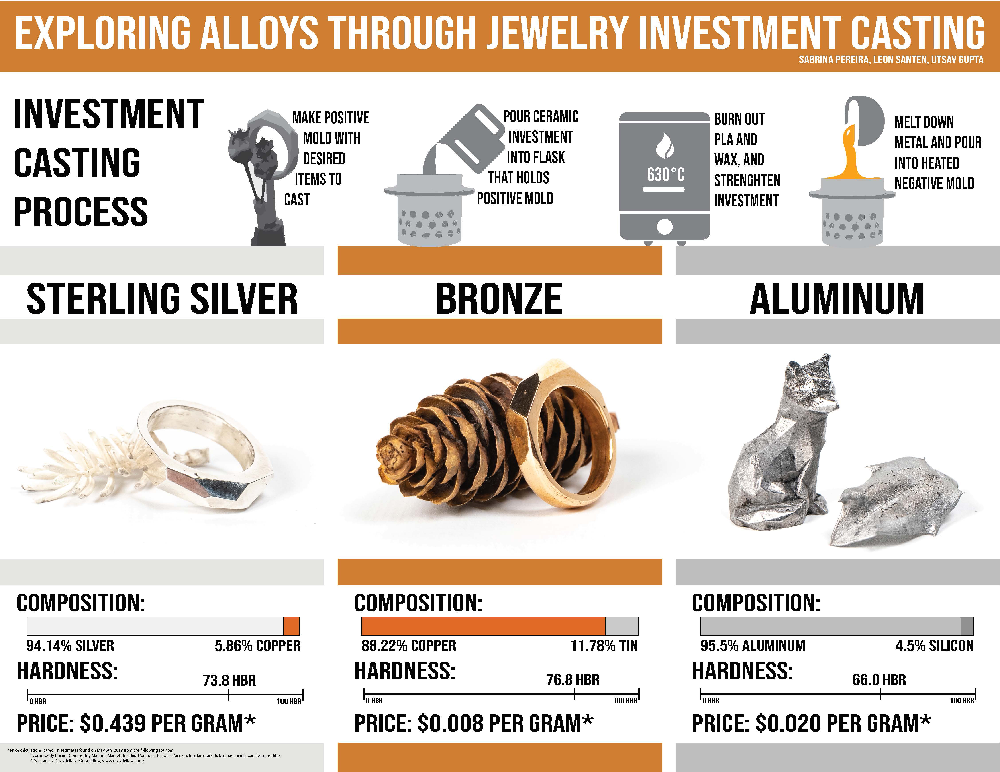

Jewelry Making with Investment Casting
- May 2019
TLDR: I designed, 3D-printed, investment-casted, and polished my own rings with sterling silver that I made myself.---
As part of a material science class at Olin, my professor John Stolk allowed my team to take a more artistic approach on the design and manufacturing of self-designed jewelry. Furthermore, we used organic objects, such as pine cones and flowers, to exactly reproduce their bodies (the pine cone in the picture above is not real, it is made out of bronze). After examining the differences between silver, bronze, and aluminum alloys, we decided to make our own sterling silver alloy. We also used ancient bronze, which is an alloy composed of 88% copper and 12% tin, to cast more jewelry. For the sake of experimentation, we used aluminum in virtue of its low density. As the investment casting process comprises many intricate steps, we tried to break down its complexity by explaining it with illustrations on our poster. I also tried my best to describe the process in the section below.
How does investment casting work?
I will explain the process by reference to the silver and bronze rings that I made. First, I created a positive mold, which I obtained by CADing (using a Computer-Aided-Design software) and 3D-printing the ring with PLA filament. As 3D-printers layer the filament, the 3D-printed rings showed clear cascade-like bumps. I had to sand those down as I did not want them to show up on the final piece.
After I “polished” the 3D-printed rings, I attached them to a wax cone. This wax cone was put in the middle of the flask. Then, I carefully poured the ceramic investment paste into the flask (mixing up the ceramic paste is its own complicated process) and exposed it to a vacuum in a vacuum chamber for a few minutes. This step ensured that no air bubbles were trapped in the fine investment paste.
After the ceramic investment that covered my positive mold had hardened, I placed it in an oven at 630 °C to burn out the wax and PLA of the positive mold. I was left with the negative mold of my rings.
I heated up the molds to ensure a steady flow of the silver and bronze. I made my own sterling silver and antique bronze by mixing 95% silver + 5% copper and 88% copper and 12% tin. Then, I poured the bronze and silver into the corresponding molds, let the molds cool down, and dissolved the investment in water. I was left with two tree-like structures.
As one of the last steps, I hardness tested and composition tested my pieces and sanded down the oxidation layers on the rings. Finally, I was left with the two rings that I had to polish.
